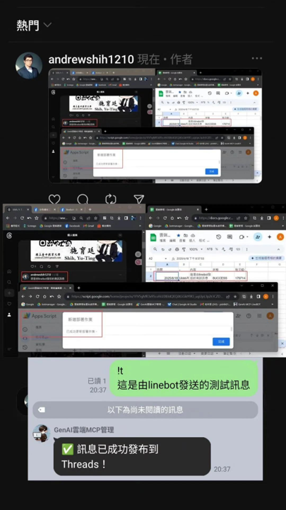

Workflow 1: Upload, rename, summarize, and ask questions
Users send a file through LINE. The system stores it in Drive, uses AI to generate a filename, summary, and category, writes the metadata into Google Sheets, and then allows follow-up questions against the uploaded file.
Workflow 2: Generate docs, slides, or web reports
When a user requests an analysis report, the system can ask for the output format and then create a Google Doc, Slides deck, or web-style report in the background. This is ideal for teaching task decomposition and asynchronous handling.
Workflow 3: Post to Threads from LINE

The materials include a workflow for staging text, appending images, and publishing to Threads. This expands the course beyond chatbots into content operations and digital communication pipelines.
Workflow 4: Search, calendar, email, notes, and location tools
In addition to AI summaries and Q and A, the system can act as a search assistant and personal workflow hub: Google search, YouTube lookup, location capture, calendar creation, email drafting, and note-taking.
Classroom activity ideas
- Ask learners to diagram the internal path of one LINE message.
- Compare file-based Q and A with plain text prompting from a data-flow perspective.
- Design a new command and specify the worksheets and modules it would require.